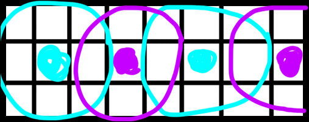

Robustness and Security in ML Systems, Spring 2021
Jonathan Soma
January 19, 2021
Handwritten Digit Recognition with a Back-Propagation Network, 1990
Y. Le Cun, B. Boser, J. S. Denker, D. Henderson, R. E. Howard, W. Hubbard, and L. D. Jackel
a.k.a. LeCun90c
Yann LeCun
Yann LeCun on Wikipedia
Chief AI Scientist (and several other titles) at Facebook, “founding father of convolutional nets.”
Yann Le Cun vs. Yann LeCun
All kinds of badly programmed computers thought that “Le” was my middle name. Even the science citation index knew me as “Y. L. Cun”, which is one of the reasons I now spell my name “LeCun”.
How to turn handwritten ZIP codes from envelopes into numbers
Examples of original zipcodes from the testing set
NOT The Problem
Location on the envelope
Digitization
Segmentation
ONLY concerned with converting a single digit’s image into a number
Why is this a good problem?
Examples of normalized digits from the testing set
Neocognitron
Neocognitron from Dr. Kunihiko Fukushima
Inspiration for CNNs, based on the relationship between the human eye and brain. A large difference is that LeCun used backprop, which makes the paper much simpler to read and the output more effective!
Original data
After segmentation, ~40x60 pixel greyscale image .
To the computer: Ten nodes, activated from -1 to +1. Higher value means higher probability of it being that digit. More or less one-hot encoding.
Output example
Given the output
[0 0 0.5 1 0 -0.3 -0.5 0 0.75 0]
The network’s prediction is nine because 0.75 is the highest number. Next most probable is a three with a score of 0.5.
Four Hidden Layers
Input: 16x16 greyscale input
H1: Feature layer
H2: Averaging layer
H3: Feature layer
H4: Averaging layer
Output: 10x1 encoding
Not fully-connected. “A fully connected network with enough discriminative power for the task would have far too many parameters to be able to generalize correctly.”
Convolution
A convolution is used to “see” patterns around a pixel like horizontal, vertical or diagonal edges.
A 3x3 kernel being applied to an image
It’s just linear algebra: a kernel is applied to create a new version of a pixel dependent on the pixels around it. The kernel (or convolutional matrix) is just a matrix that is multiplied against each pixel and its surroundings.
Application of the convolution
Edges of the image are padded with -1 to allow kernel to be applied to outermost pixels. The result is called a feature map.
Kernel being applied to create the first layer
A single kernel map
The -1+1 range of each feature map highlights a specific type of feature at a specific location.
Upper edge highlighted by a convolution
Layer: H1
Four different 5x5 kernels are applied, creating four different 576-node feature maps that each highlight a different type of feature.
Four kernels applied, each extracting a different feature
Layer: H2
We don’t need all that detail, though! Layer H2 averages the 24x24 feature maps down to 12x12, converting local sets of 4 nodes in H1 to a single node in H2.
Reducing layer H2
Layer: H3
H3 is another feature layer, operating just like H1 but generating twelve 8x8 feature maps. Each kernel is again 5x5.
Feature layer H3
H2-H3 connections
Note that not all H3 kernels are applied to all H2 layers. Selection is “guided by prior knowledge of shape recognition.” This simplifies the network.
Connections between H2 and H3 layers
Layer: H4
H4 is similar to H2, in that it averages the previous layer.
This reduces H3’s 8x8 size to 4x4.
Reducing layer H4
Output
10 nodes, fully connected to H4. Each activates between -1 and +1 with a higher score meaning a more likely prediction for that digit.
Did not depend on elaborate feature extraction, only rough spatial and geometric information.
Training and testing
Weights adjusted using backpropagation
Trained on 7,291 handwritten + 2,549 printed digits with 30 epochs
Test set error rate was 3.4%
Errors were half due to faulty segmentation, and some human beings couldn’t even read!
Performance
Example of atypical data
Robust model that generalizes very well when presented with unusual representations of digits.
Throughput is mainly limited by the normalization step! Reaches 10-12 classifications per second.
The birth of CNNs!
But then they went to sleep for one of the many AI winters. For successful deep learning you generally need:
A lot of data
A lot of processing power (or tricks to speed things up)
Time passes
The Problem
ImageNet: 15 million labeled high-res images, belonging to ~22,000 categories. Labeled by people on Mechanical Turk.
ILSVRC: ImageNet Large-Scale Visual Recognition Challenge - subset of ImageNet with 1,000 images in each of 1,000 categories
ImageNet 2010 entrants
LBP: Local binary patternSIFT: scale invariant feature transform
Up until 2012, the entrants were very concerned with quick, manually engineered features and SVMs.
ImageNet 2010 results
Top 1 vs top 5
Best performance error rates:
top-1: 47.1%, 45.7%
top-5: 28.2%, 25.7%
ImageNet Classification with Deep Convolutional Neural Networks, 2012
Alex Krizhevsky, Ilya Sutskever, Geoffrey E. Hinton
The Approach
Another CNN! But bigger, deeper, and much more optimized.
But also remarkably similar to LeCun90c!
Preprocessing original data
Input was variable-size normal images.
Cropped image
Downsampled to >256x256
Then cropped to 256x256 pixels
RGB values converted to distance from mean pixel value
Why are we keeping RGB values? What are downsides of using RGB?
Model Input
Not the 256x256 image! 244x244 images instead.
Several 244x244 slices
Top left, top right, bottom left, bottom right, and center. Reflected, too. Can actually create these on CPU while the GPU is working.
What’s the point of doing this? They’re basically the same image!
Network Layers
Input: 244x244x3 image
L1: 96 kernels of 11x11x3 w/ stride of 4.
L2: 256 kernels of 5x5x48
L3: 384 kernels of 3x3x256
L4: 256 kernels of 3x3x192
L5: 256 kernels of 3x3x192
Dense layers: two 2048-node fully-connected layers
Output: 1000 nodes
Very deep - LeCun’s only had two convolutional layers. Why do we suddenly have all these extra layers?
What is missing compared to LeCun’s digit analysis?
Reduction
LeCun90c: “Averaging layer,” take 2x2 pixel area and condense to 1 pixel
AlexNet: “Pooling” - take every other pixel, average with the surrounding 8 pixels. This resizes the same amount, but with overlap!
2x3 max pooling
Happens on layers 1, 2 and 5. Why wouldn’t you do this on every layer? Why do this at all?
Response normalization
Force competition between kernels at the same location.
If a lot of kernels have high levels of activity, adjust so only the most active ones express themselves.
a.k.a. if an area has a few features, the network mostly notices the most obvious ones.
Occurs after convolution but before max pooling.
Why not just focus on all of the features?
ReLUs
Uses ReLUs instead of hyperbolic tangent for neuron model.
ReLU vs tanh
tanh is saturating because it’s squashed into 0-1, and near 0 or 1 there isn’t much change
ReLU is nonsaturating, so it will converge faster because gradients are larger
Why is training speed important?
Can do in 5 epochs what would have taken ~37 epochs with tanh!
ReLU vs tanh training
Limiting factor for model is training time. Decreasing training time = increase dataset or train longer.
GPUs vs CPUs
Wrote a GPU implementation of 2D convolutions. GPUs are excellent at running computations in parallel, which allowed a much larger CNN than previous work.
In the end, the network’s size is limited mainly by the amount of memory available on current GPUs and by the amount of training time that we are willing to tolerate. Our network takes between five and six days to train on two GTX 580 3GB GPUs. All of our experiments suggest that our results can be improved simply by waiting for faster GPUs and bigger datasets to become available.
Another speedup: multiple GPUs
Feature maps are spread across two GPUs, GPUs only talk to each other between the 2nd and 3rd layers and after the last conv layer.
Parallelization = speedup = more training epochs
Similar to a “columnar” CNN.
Kernels across GPUs
Layers
Layer architecture
Dropout
It would be nice to combine multiple prediction models, but too expensive even with the speedups!
Instead, DROPOUT: during training, randomly set half of the neurons to 0 and don’t let them participate. Almost like having multiple models, and only increases training time 1-2x.
It’s like breaking your hand and having to write with your non-dominant one.
Only used in the first two layers.
Performance: top-1 vs top-5
Top 1 vs top 5
Top 1 error rate: 37.5
Top 5 error rate: 17.0
Performance: top-1 vs top-5
Amazing performance! Blows the competition out of the water!
Performance on 2010 dataset
Also tested against ImageNet 2009, top-1 and top-5 error rates were 67.4% and 40.9% compared to best published results on of 78.1% and 60.9%.
What is the right label?
An interesting subset
This was the beginning
ImageNet error rates over time
After 2017 ImageNet stopped hosting because the models were too good, beating humans!
2013: VGGNet
VGGNet architecture
7.3% top-5 error! 19 layers.
Stacking convolutional layers: Use multiple 3x3 layers instead of larger layers. Smaller filters, but deeper network!
2014: GoogLeNet
GoogLeNet architecture
6.7% top-5 error! 22 layers.
Inception module: What size convolution should we use? All of them! Then let the network figure out which one to pay attention to. Far fewer parameters.
2015: ResNet
ResNet architecture
3.57% top-5 error! 152 layers!
Residual blocks: More layers aren’t always better layers! Residual blocks have output of layer n feed into layer n+1 but also layer ~n+3.
Questions
From a technical perspective, what changed between these 1990 and 2012 papers? What stayed the same?
What do we still use from AlexNet and what have we discarded?
What role does computing power play in machine learning’s capabilities?
What role does a dataset play in the determination of ML capabilities?
In both models we spend a lot of time discarding data. What happened to “more data is better data?”
What features of these systems make them more or less robust/secure?


{kind=link}